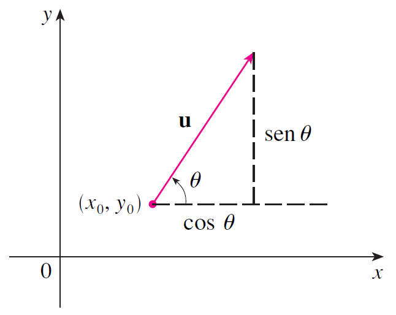
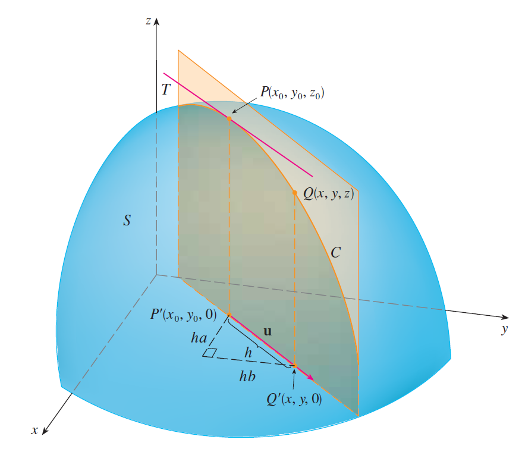

PARTE 2 · AULAS 16–18
Derivadas direcionais e vetor gradiente
A derivada direcional generaliza as derivadas parciais para qualquer direção. O gradiente identifica a direção de crescimento máximo e é normal às curvas e superfícies de nível.
1. Normalização da direção
Uma derivada direcional usa um vetor unitário. Para \(\mathbf v\neq\mathbf0\),
\[\mathbf u=\frac{\mathbf v}{\|\mathbf v\|}.\]

2. Derivada direcional
\[D_{\mathbf u}f(a,b)=\lim_{h\to0}\frac{f(a+hu_1,b+hu_2)-f(a,b)}{h}.\]
Se \(f\) é diferenciável,
\[D_{\mathbf u}f(a,b)=\nabla f(a,b)\cdot\mathbf u.\]
3. Gradiente
\[\nabla f(x,y)=\langle f_x(x,y),f_y(x,y)\rangle.\]
- Aponta na direção de crescimento mais rápido.
- A taxa máxima é \(\|\nabla f\|\).
- O vetor oposto aponta para o decrescimento mais rápido.
- É perpendicular às curvas de nível.
Exemplo resolvido.
Para \(f=x^2+2y^2\), em \(P=(1,1)\),
\[\nabla f(P)=\langle2,4\rangle.\]
Na direção \(\mathbf v=\langle3,4\rangle\),
\[\mathbf u=\left\langle\frac35,\frac45\right\rangle.\]
\[D_{\mathbf u}f(P)=\frac{22}{5}.\]
4. Superfícies de nível
Para \(F(x,y,z)=k\), \(\nabla F(P)\) é normal à superfície.
\[\nabla F(P)\cdot\langle x-x_0,y-y_0,z-z_0\rangle=0.\]

Visualização no GeoGebra 3D
Abrir GeoGebra 3D ↗Abra o ambiente 3D para explorar geometricamente os objetos relacionados a este conteúdo.
Material organizado a partir das aulas da GCT054 e da bibliografia indicada no Plano de Ensino, especialmente Stewart (2014), Anton, Bivens e Davis (2014) e Thomas, Weir e Hass (2013).